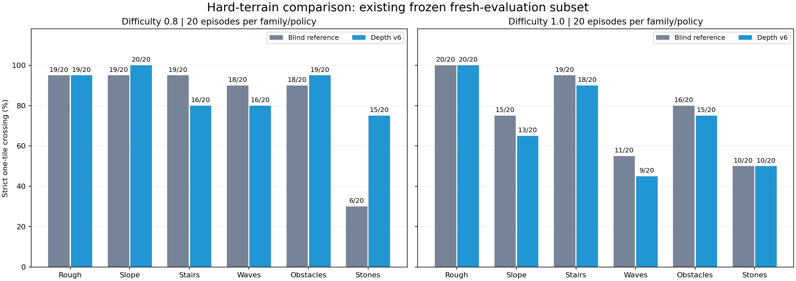

고난도 지형: 기존 정책 vs 깊이 학습 v6
학습·정책 변경 없이 동일한 v6 시뮬레이터 조건에서 비교합니다. 현재 지형 설정의 최대 난이도는 1.0입니다.
최대 난이도 1.0 — 지형을 선택해 비교
기존 정책 (깊이 입력 무시)
깊이 학습 정책 v6
각 영상: 난이도1.0 · 지형 생성 seed56 · 초기화 seed33 · 1개 환경 · 무편집16초.
낙상이나 시간제한 뒤 초기화도 그대로 보존했습니다. 영상의 한 사례는 아래 통계에 합산하지 않습니다.
별도로 검증한 고난도 통과 성능
기존 신규 검증 4쌍(지형/초기화51/31,51/32,56/33,57/33)에서 0.8·1.0만 분리했습니다.
정책마다 240개 험지 episode이며, 각 지형·난이도마다 20개입니다. 새 독립 표본을 추가한 결과가 아닙니다.
난이도 0.8
99/120 → 105/120
낙상 12 → 10회 · 6타일 완주 22 → 1회
난이도 1.0
91/120 → 85/120
낙상 19 → 28회 · 6타일 완주 3 → 0회
난이도0.8에서는 개선됐지만, 최대 난이도1.0에서는 통과율과 낙상이 악화됐습니다.
두 난이도를 합치면 통과는 190/240으로 동일하고 낙상은 31→38회, 6타일 완주는 25→1회입니다. 기존 v5 권장을 유지합니다.

| 지형 | 난이도 | 기존 통과 | 깊이 통과 | 기존 → 깊이 낙상 | 기존 → 깊이 6타일 |
|---|
| 불규칙 요철 | 0.8 | 19/20 | 19/20 | 1 → 1 | 12 → 0 |
| 불규칙 요철 | 1.0 | 20/20 | 20/20 | 0 → 0 | 3 → 0 |
| 경사면 | 0.8 | 19/20 | 20/20 | 1 → 0 | 0 → 0 |
| 경사면 | 1.0 | 15/20 | 13/20 | 5 → 7 | 0 → 0 |
| 계단 | 0.8 | 19/20 | 16/20 | 1 → 4 | 0 → 0 |
| 계단 | 1.0 | 19/20 | 18/20 | 1 → 1 | 0 → 0 |
| 물결형 지형 | 0.8 | 18/20 | 16/20 | 2 → 4 | 10 → 1 |
| 물결형 지형 | 1.0 | 11/20 | 9/20 | 8 → 11 | 0 → 0 |
| 불연속 장애물 | 0.8 | 18/20 | 19/20 | 1 → 1 | 0 → 0 |
| 불연속 장애물 | 1.0 | 16/20 | 15/20 | 4 → 5 | 0 → 0 |
| 징검다리 | 0.8 | 6/20 | 15/20 | 6 → 0 | 0 → 0 |
| 징검다리 | 1.0 | 10/20 | 10/20 | 1 → 4 | 0 → 0 |
엄격한 통과: 13.1m 이상 이동 + 해당 첫 episode 전체에 걸쳐 낙상·레인·월드 이탈 없음. 6타일은53.1m. 생존만으로 성공 처리하지 않습니다. 실제 RGB-D 영상이 아닌143-ray 지형 스캔입니다.
상세 표 · 원본 집계·근거 · 독립 검증 · 영상 조건·체크포인트